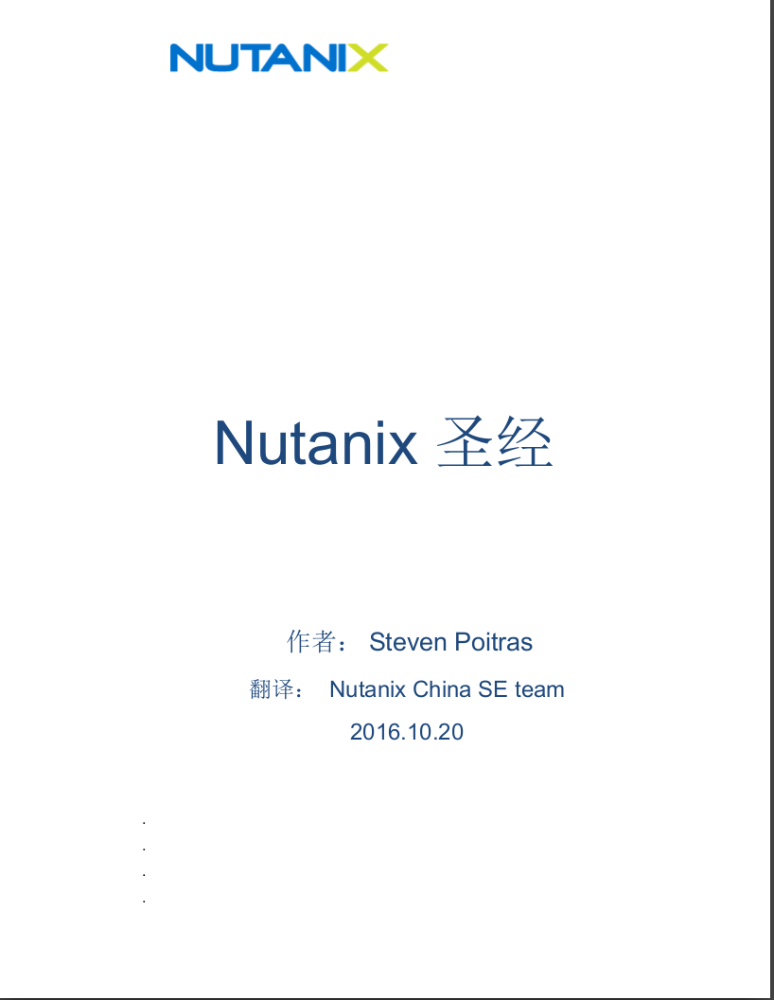
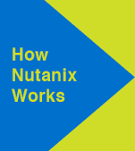
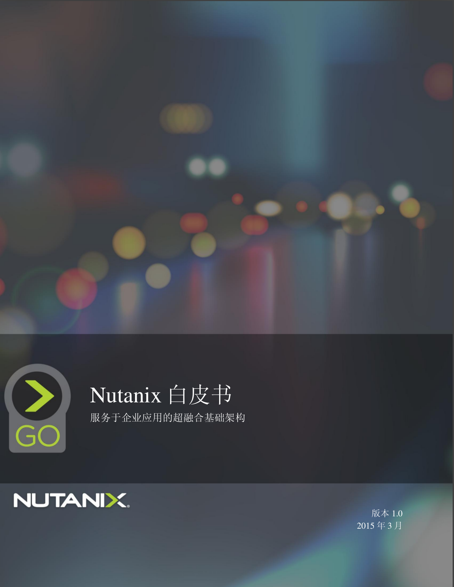

资料名称：Nutanix圣经3.0中文版
Nutanix_圣经_3.0.pdf 点此下载
资料简介：Nutanix圣经详细讲述了Nutanix超融合系统的设计原理，是工程师深入理解数据中心变革，理解超融合应用在整合存储、计算、虚拟化、管理的设计方法及实现技术，是目前对超融合技术最全面、最深入的讲述。
Nutanix Bible Nutainx圣经原文网站:www.nutanixbible.com

资料名称：Nutanix是如何工作的中译本
Nutanix How it Works_-中译本-160511.pdf 点此下载
资料简介：Nutanix 实现了整个数据中心堆栈的融合，包括计算、存储、存储网络和虚拟化。以简单的 2U 设备取代复杂 而昂贵的传统基础架构，帮助企业从小规模起步，然后逐步扩展:一次增加一个节点。每部服务器(也称节点)都配备英特尔内核 x86 硬件，以及闪存固态硬盘(SSD)与机械硬盘(HDD)。运行于各个节点的 Nutanix 软件将所有运行功能分布于整个集群，以实现出色性能和灵活性。

资料名称：Nutanix白皮书-中译本:通往超融合基础架构之旅
Nutanix白皮书-中译本:通往超融合基础架构之旅 点此下载
超融合与 Web-Scale 技术正在企业数据中心掀起一场革命。融合是指通过单一套件提供存储与计算（CPU 与 RAM），并通过标准以太网建立连接。Web-Scale 技术使用高度分布式无共享架构扩展了融合理念，其特点包括 100%数据可用性、真正的线性伸缩性，以及高性能智能自动化。本技术说明书将讨论微软应用性能的重要特点，以及 Nutanix 超融合基础架构为重要工作负载带来的优势。